ECMWF SEAS5 · May initialization · CHIRPS v2.0 · 0.25°
Calibrated seasonal rainfall outlooks for Ethiopia
Bias-corrected, probability-calibrated June–September rainfall outlooks for Ethiopia, built from the ECMWF SEAS5 ensemble and evaluated against CHIRPS observations over 1993–2025, with a frozen 2026 forecast verified as observations arrive.
Research reconstruction. These are retrospective research products, not official forecasts of the Ethiopian Meteorology Institute (EMI) or ICPAC.
Workflow
Every stage is a script in scripts/ with its own checks; documents 01–37 in docs/ record each step and decision.
- 1
Download
ECMWF SEAS5 (system 51) daily accumulated precipitation, May initialization, 183 days, 25 hindcast / 51 forecast members, via the Copernicus CDS.
download_seasonal_forecasts_daily_c3s.py - 2
Inspect
Inventory every year: initialization, lead times, member counts, accumulation increments (GRIB packing tolerance 0.2 mm).
inspect_inputs.py - 3
Prepare
De-accumulate to daily totals, label days by interval start, sum JJAS (122 days) and each month; CHIRPS on the same dates.
prepare_seasonal.py · run_monthly.py - 4
Regrid
Each 1° model cell copied into its 4×4 block of 0.25° CHIRPS cells; edges and area conservation verified.
regrid_seasonal.py - 5
Calibrate
Per-cell mean–variance amount correction, smoothed tercile counts, one climatology-blend weight per target (leave-one-year-out).
final_shared_blend.py - 6
Evaluate
Nested cross-validation 1993–2016, fixed-fit evaluation 2017–2025, whole-year significance gates.
local_blend.py · decision_gates.py - 7
Deliver
Maps, bulletin and offline gallery; forecasts frozen with SHA-256 hashes before observations are used.
finalize_forecast_delivery.py · run_operational.py - 8
Verify
Official CHIRPS v2.0 p25 monthly files, overlap-checked against the archive, scored per month and season.
prepare_verification_2026.py · verify_frozen_2026.py
Data and methods
Data
| Source | Details |
|---|---|
| ECMWF SEAS5 | CDS seasonal-original-single-levels, system 51, total precipitation, 1 May initialization, 1993–2026; 25 members (1993–2016), 51 (2017–2026); 1° grid, 3–15°N, 33–48°E |
| CHIRPS v2.0 | 0.25° daily; archive 1993–2025; 2026 from official p25 monthly files, overlap-checked against the archive |
| Targets | JJAS (122 days) and the months Jun, Jul, Aug, Sep |
| Masks | Ethiopia (1,484 cells, cell-centre rule); descriptive rainfall regimes R0–R3 fixed on 1993–2025 |
Quality control
- All 34 forecast files inventoried; re-downloaded years were bit-identical, confirming SEAS5 system 51.
- Small negative daily increments (≤0.15 mm) are GRIB packing rounding (2−13 m); tolerated up to 0.2 mm, clipped, and the seasonal sum is checked to telescope.
- CHIRPS sea cells (223) are permanently missing; no partial seasons enter any fit.
Calibration (final method)
- Amount correction per cell, equal weight per year:
x̂ = max(0, μobs + r·(x − μmodel)), r = clip(σobs/σmodel, 0.5, 2) - Tercile probabilities from corrected members against CHIRPS terciles, smoothed:
(n + 0.5)/(M + 1.5) - Climatology blend:
p = (1 − λ)·pmodel + λ·pclim, one λ per target fitted on leave-one-year-out RPS (λ = JJAS 0.50, Jun 0.74, Jul 0.60, Aug 0.48, Sep 0.79)
Evaluated and not adopted: regularized Dirichlet recalibration, per-cell and regime-specific blend weights, an Ethiopia-only blend domain and removing the blend. Uncalibrated ECMWF probabilities score RPSS -0.41 for JJAS over 2017–2025.
Historical skill
Ranked probability skill score (RPSS) of the final method against climatology, Ethiopia cells, one score per year. 1993–2016 uses nested leave-one-year-out fits; 2017–2025 uses fits on 1993–2016 (exploratory, years seen during method selection). Bold: one-sided whole-year permutation p < 0.05.
| Target | RPSS 1993–2016 (nested CV) | Years better | RPSS 2017–2025 | Years better | Probability coverage |
|---|---|---|---|---|---|
| JJAS | +0.046 p=0.03 | 19/24 | +0.050 p=0.06 | 6/9 | 98% |
| Jun | +0.010 p=0.29 | 14/24 | +0.024 p=0.10 | 6/9 | 79% |
| Jul | +0.017 p=0.09 | 17/24 | +0.036 p=0.16 | 5/9 | 79% |
| Aug | +0.021 p=0.09 | 15/24 | +0.066 p=0.01 | 7/9 | 81% |
| Sep | +0.004 p=0.32 | 12/24 | +0.010 p=0.25 | 4/9 | 96% |
After adjusting for five targets, no gain over climatology is statistically significant; JJAS is significant on its own (p = 0.03). Monthly skill is small.
Where the forecast is skilful
| Region (nested 1993–2016) | JJAS | Jun | Jul | Aug | Sep |
|---|---|---|---|---|---|
| R0 arid / marginal | +0.108 p=0.03 | -0.007 p=0.56 | +0.006 p=0.44 | +0.073 p=0.01 | +0.008 p=0.37 |
| R1 western unimodal | +0.055 p=0.04 | +0.008 p=0.33 | +0.031 p=0.01 | +0.004 p=0.38 | +0.005 p=0.35 |
| R2 Belg–Kiremt | +0.101 p=0.01 | +0.028 p=0.21 | +0.036 p=0.04 | +0.050 p=0.01 | +0.007 p=0.30 |
| R3 Gu–Deyr | -0.008 p=0.64 | -0.007 p=0.62 | -0.030 p=0.81 | -0.004 p=0.57 | -0.000 p=0.51 |
| R1+R2 JJAS domain | +0.078 p=0.01 | +0.018 p=0.23 | +0.034 p=0.01 | +0.027 p=0.04 | +0.006 p=0.29 |
R3 (Gu–Deyr, south and south-east) shows no clean-period skill for any target; June and September show none in any region.
Decisions tested with significance gates
A change is adopted only if it improves nested 1993–2016 scores (Holm-adjusted p < 0.05) and does not worsen 2017–2025.
| Candidate change | Δ score 1993–2016 | Δ score 2017–2025 | Decision |
|---|---|---|---|
| Fit blend weight on Ethiopia only | +0.0003 to +0.0013 | -0.0038 to -0.0001 | Not adopted |
| Square-root amount correction (probabilities) | -0.0007 to +0.0003 | -0.0033 to -0.0006 | Not adopted |
| Remove the climatology blend | +0.0106 to +0.0316 | -0.0137 to +0.0211 | Not adopted |
| Plain climatology | +0.0017 to +0.0210 | +0.0044 to +0.0303 | Not adopted |
| Square-root amount correction (rainfall amounts, CRPS) | -0.13 to -0.10 mm | better in all targets | Passes for all targets (next cycle) |
Ensemble diagnostics
| Target | RPS, 51 members | RPS, 25-member subsets | Spread / error (hindcast → operational) |
|---|---|---|---|
| JJAS | 0.4284 | 0.4307 | 0.72 → 0.80 |
| Jun | 0.4590 | 0.4600 | 0.68 → 0.64 |
| Jul | 0.4506 | 0.4522 | 0.74 → 0.74 |
| Aug | 0.4264 | 0.4284 | 0.78 → 0.76 |
| Sep | 0.4548 | 0.4557 | 0.78 → 0.73 |
51-member forecasts score at least as well as 25-member hindcast-sized ensembles, so the transfer is safe. The corrected ensemble is under-dispersive (spread/error below 1), which the climatology blend partly compensates.
2026 forecast
May-initialized, 51 members, fitted on 1993–2025 and frozen before any 2026 observation was used. Probabilities are area means of grid-cell probabilities.
| Target | Below normal | Near normal | Above normal | Mean anomaly | Climatology weight | Area led by below normal |
|---|---|---|---|---|---|---|
| JJAS | 50% | 25% | 24% | -66.0 mm | 0.50 | 78% |
| Jun | 43% | 30% | 27% | -15.1 mm | 0.74 | 80% |
| Jul | 45% | 29% | 26% | -16.9 mm | 0.60 | 77% |
| Aug | 51% | 26% | 23% | -18.9 mm | 0.48 | 85% |
| Sep | 36% | 31% | 33% | -11.7 mm | 0.79 | 30% |
Monthly and seasonal outlooks are calibrated separately: the corrected monthly means sum to 378 mm against 375 mm for JJAS (+3.3 mm).
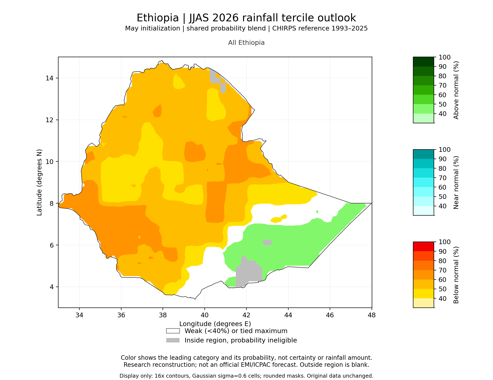
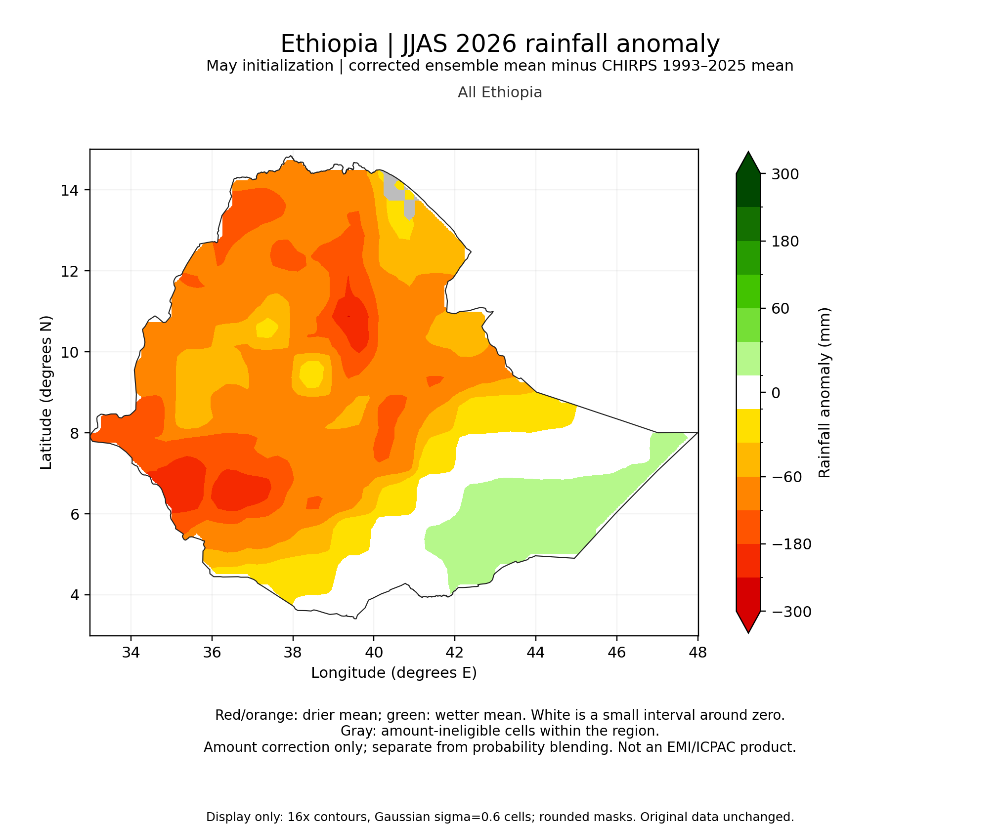
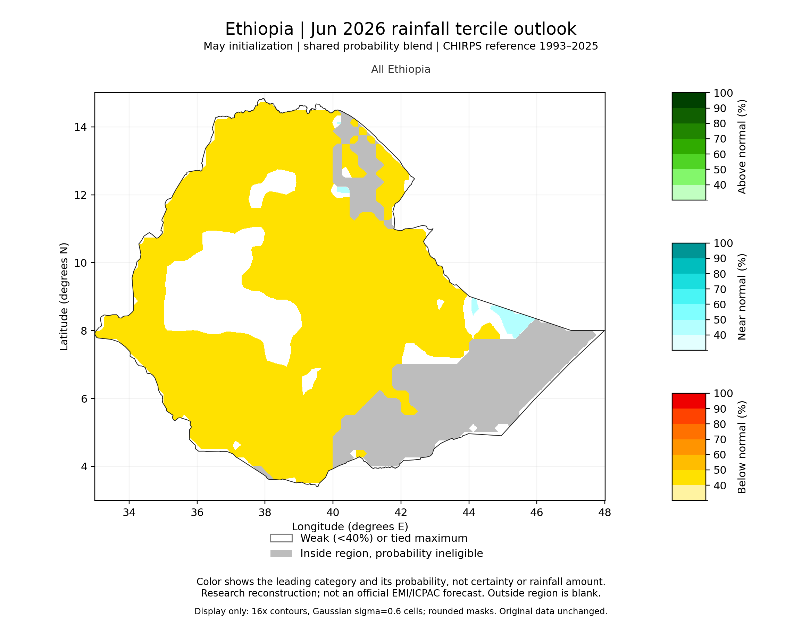
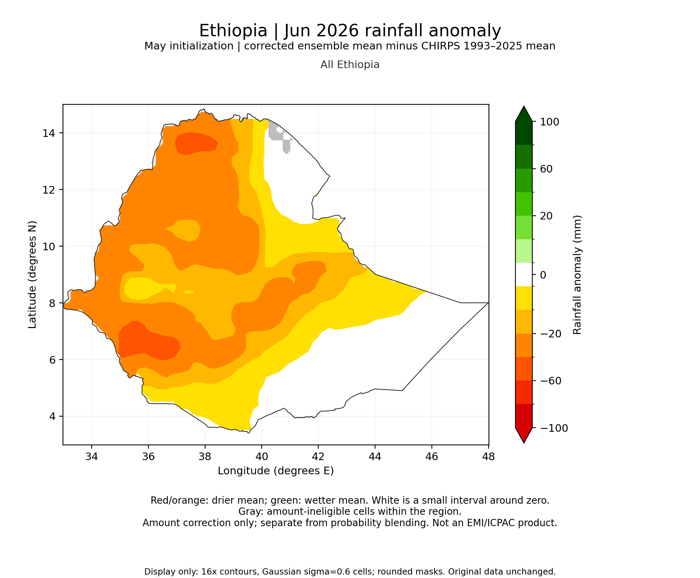
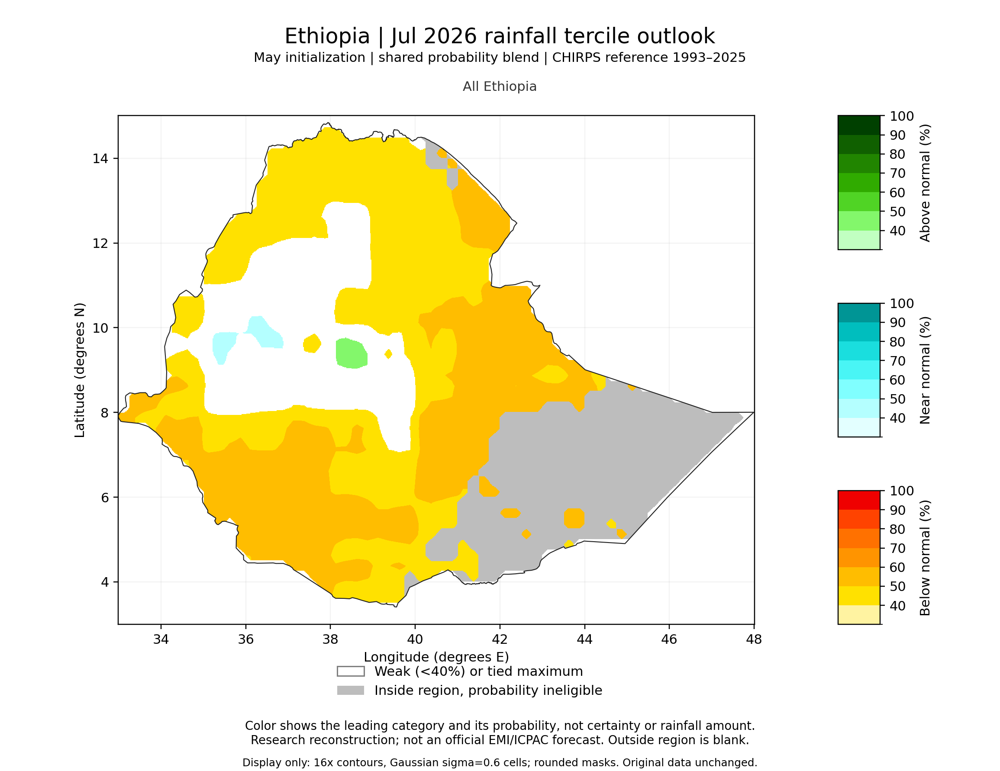
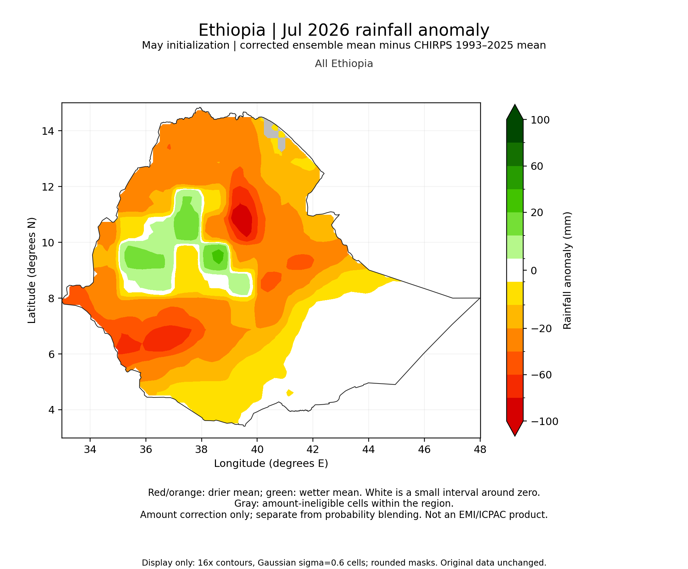
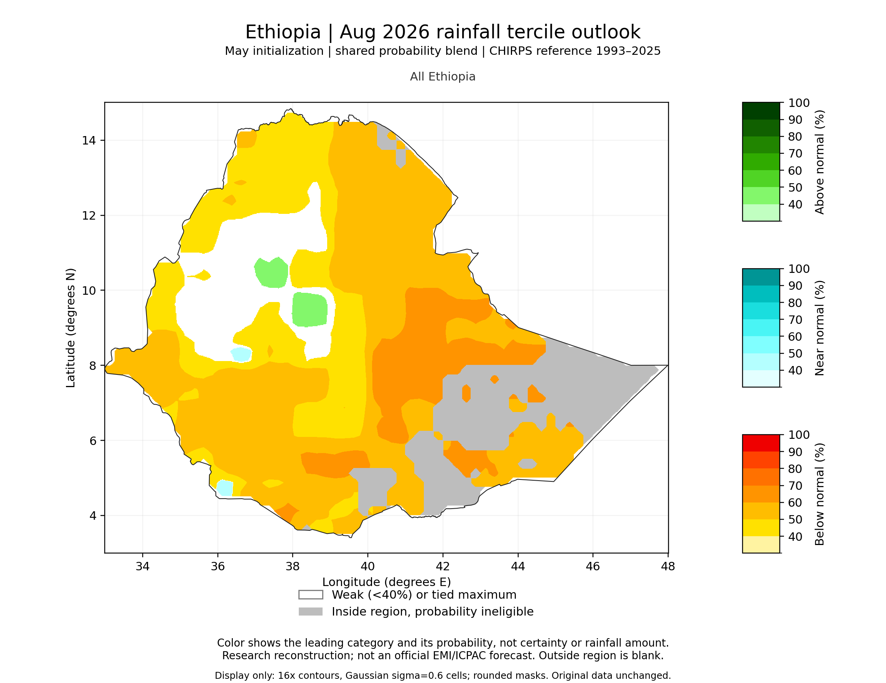
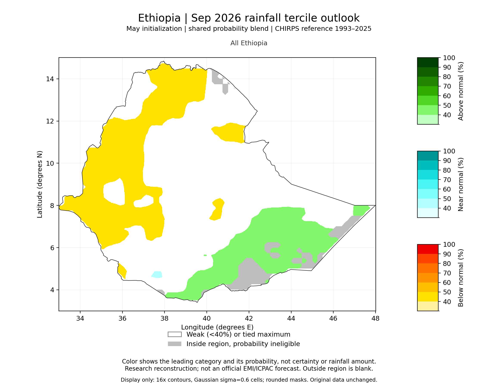
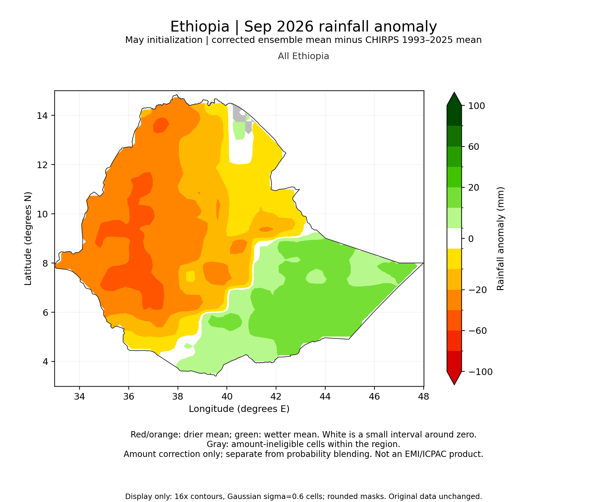
2026 verification
Frozen forecasts scored against official CHIRPS v2.0 observations. Single-season results, not evidence of multi-year reliability.
| Target | Final RPSS | Raw RPSS | Corrected CRPSS | Corrected bias | Observed below / near / above (area) |
|---|---|---|---|---|---|
| Jun | +0.193 | -0.31 | +0.388 | +5.4 mm | 71% / 19% / 10% |
| Jul | +0.254 | -0.36 | +0.279 | +19.1 mm | 84% / 11% / 5% |
| Aug | +0.279 | -0.15 | +0.441 | +12.9 mm | 79% / 11% / 10% |
| Sep | pending | — | — | — | — |
| JJAS | pending | — | — | — | — |
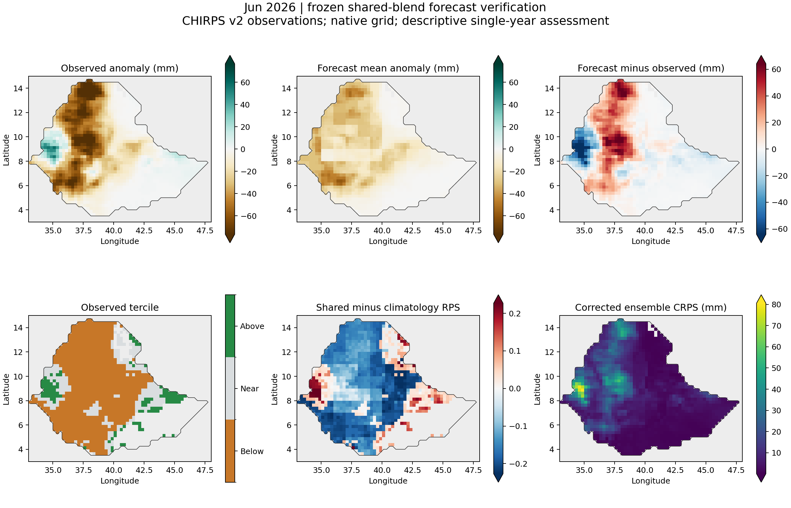
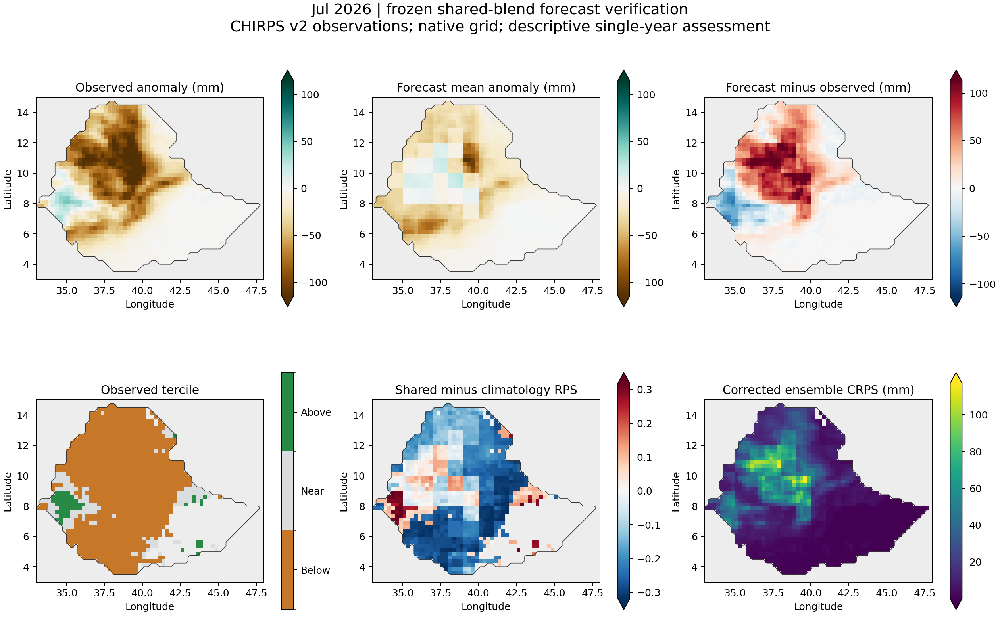
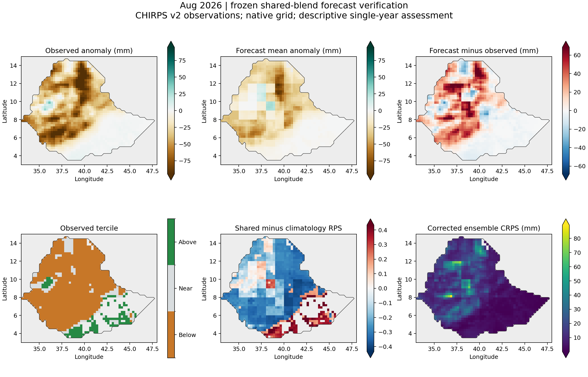
Limitations
- Nine fixed-fit evaluation years and one verification season give wide uncertainty; regional and monthly results are noisy.
- The 2017–2025 period was inspected during method development; clean evidence comes from nested 1993–2016 scores.
- The 0.25° maps repeat 1° model information; they do not add dynamical detail.
- Not an official EMI or ICPAC product.
Reproduce
git clone https://github.com/YonSci/calibrated_seasonal_rainfall.git
python -m venv .venv && .venv\Scripts\activate && pip install -r requirements.txt
python scripts\prepare_seasonal.py --config config\project.json --all-years
python scripts\final_shared_blend.py --config config\project.json --region-mask data\masks\ethiopia_common.nc
python scripts\run_operational.py --workflow allRaw ECMWF and CHIRPS data are not stored in the repository; download instructions are in docs/37. Status and decisions: docs/36.